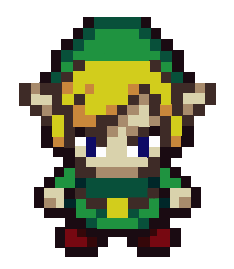

Questa pagina usa un layout in css

Mario Bros. è un videogioco arcade prodotto da Nintendo,pubblicato nel 1983
nelle sale giochi e successivamente portato sulle sue console.
è uno dei più famosi videogiochi a piattaforme 2D a schermata fissa.
Le piattaforme mantengono la stessa posizione durante l'intero corso del gioco e tutti i livelli hanno la stessa forma,
pur cambiando i dettagli decorativi.

The Legend of Zelda è una serie di videogiochi in ambientazione high fantasy.
Il gameplay si può definire un misto di azione, avventura, rompicapo, e, occasionalmente, platform, stealth e guida.
Nata nel 1986 per il Nintendo Entertainment System, la serie venne creata da Shigeru Miyamoto.
La serie di The Legend of Zelda è considerata una delle più importanti e acclamate del mondo videoludico e
la maggior parte dei titoli che la compongono sono riconosciuti dalla critica grandi capolavori,
come The Legend of Zelda: Ocarina of Time, spesso considerato il migliore videogioco di tutti i tempi.